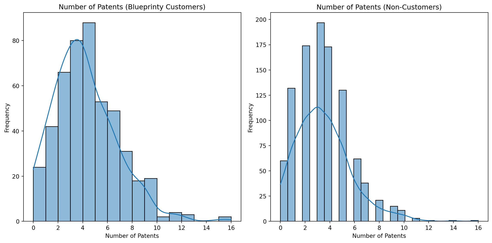

import pandas as pd
import matplotlib.pyplot as plt
import seaborn as sns
# Replace 'your_data.csv' with the actual path to your data file
data = pd.read_csv('blueprinty.csv')
# It's always a good idea to get a quick look at the data
print(data.head())
print(data.info())
print(data.describe())
# The column indicating Blueprinty usage is 'iscustomer' (0 for no, 1 for yes)
customer_users = data[data['iscustomer'] == 1]
non_customers = data[data['iscustomer'] == 0]
# The column with the number of patents is 'patents'
patents_column = 'patents'
# Create histograms
plt.figure(figsize=(12, 6))
plt.subplot(1, 2, 1)
sns.histplot(customer_users[patents_column], kde=True)
plt.title('Number of Patents (Blueprinty Customers)')
plt.xlabel('Number of Patents')
plt.ylabel('Frequency')
plt.subplot(1, 2, 2)
sns.histplot(non_customers[patents_column], kde=True)
plt.title('Number of Patents (Non-Customers)')
plt.xlabel('Number of Patents')
plt.ylabel('Frequency')
plt.tight_layout()
plt.show()
# Calculate means
mean_patents_customer = customer_users[patents_column].mean()
mean_patents_non_customer = non_customers[patents_column].mean()
print(f"\nMean number of patents (Blueprinty customers): {mean_patents_customer:.2f}")
print(f"Mean number of patents (Non-customers): {mean_patents_non_customer:.2f}") patents region age iscustomer
0 0 Midwest 32.5 0
1 3 Southwest 37.5 0
2 4 Northwest 27.0 1
3 3 Northeast 24.5 0
4 3 Southwest 37.0 0
<class 'pandas.core.frame.DataFrame'>
RangeIndex: 1500 entries, 0 to 1499
Data columns (total 4 columns):
# Column Non-Null Count Dtype
--- ------ -------------- -----
0 patents 1500 non-null int64
1 region 1500 non-null object
2 age 1500 non-null float64
3 iscustomer 1500 non-null int64
dtypes: float64(1), int64(2), object(1)
memory usage: 47.0+ KB
None
patents age iscustomer
count 1500.000000 1500.000000 1500.000000
mean 3.684667 26.357667 0.320667
std 2.352500 7.242528 0.466889
min 0.000000 9.000000 0.000000
25% 2.000000 21.000000 0.000000
50% 3.000000 26.000000 0.000000
75% 5.000000 31.625000 1.000000
max 16.000000 49.000000 1.000000
Mean number of patents (Blueprinty customers): 4.13
Mean number of patents (Non-customers): 3.47